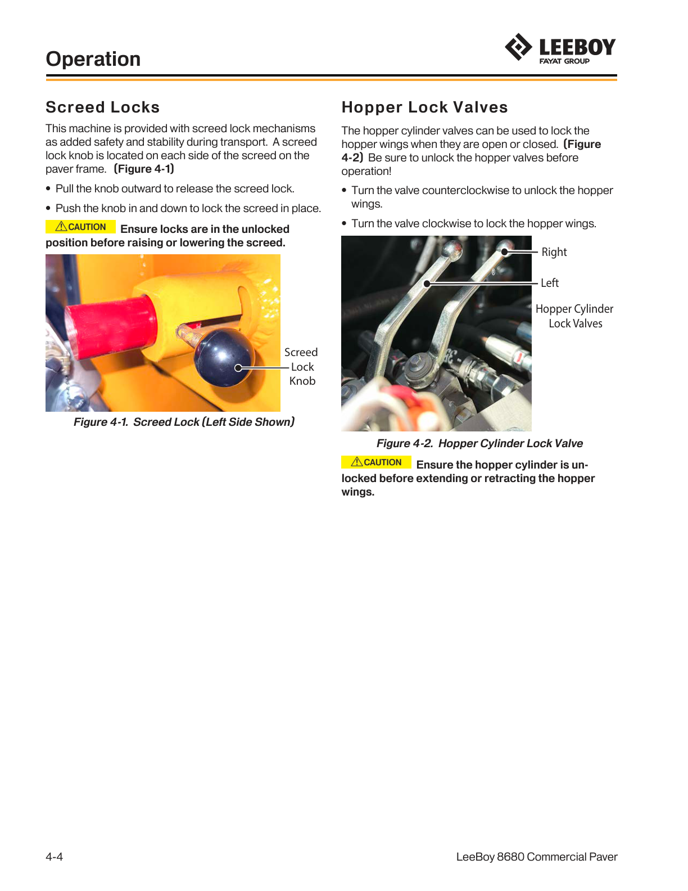

Study chapter · Outline I8
Follow shut down procedures
A controlled shutdown preserves the paver’s condition and leaves a clear handover. The process includes parking, heat and energy controls, inspection and security—not simply switching off the engine.
Learning step 1
Shut-down procedures
Select the designated stable parking location with service access and clear public/emergency routes. Consider the possibility that the machine will not restart. Use level ground where required for the procedure and fluid checks. Coordinate completion of material handling and screed work before the final stop.
Follow the matching OMM sequence for stopping working functions, positioning the screed and attachments, parking controls, required cooling and engine shutdown. Do not transfer a cooldown time or control sequence from a different model. Use specified supports, locks and chocks. A normal shutdown does not by itself authorize maintenance access: apply the full lockout procedure when the next task requires it.
Inspect from safe access areas for leaks, damage, buildup and missing guards. Keep away from hot or pressurized systems and moving/unsupported parts. Record machine ID, meter, parking location, defects and required service. Secure keys, panels and detachable items, then communicate the final status to the responsible person and next shift.
The practical checklist uses the actual machine procedure. Safety-critical parking, support and energy-control items must all pass. The outline’s 80% checklist threshold cannot compensate for an unsafe final state. Repeat the required practice after feedback and record the new attempt separately.
Leave a known safe state for the next person

LeeBoy 8680 screed locks and hopper lock valves

Try it and explain your thinking
Explain shutdown versus lockout.
Explain shutdown versus lockout.
Skills you use: Reading, Communication.
A ten-item assessment gives 17/20 but a required screed-support check failed
A ten-item assessment gives 17/20 but a required screed-support check failed. State the result.
Skills you use: Numeracy, Problem solving.
Prepare a concise next-shift note.
Prepare a concise next-shift note.
Skills you use: Writing, Collaboration.
Show the skill in supervised practice
Machine/model/serial or classroom case: __________ · Manual/procedure and revision: __________ · Date/location: __________ · Learner/observer: __________
The outline specifies a minimum 80% checklist result for this task. Score the 3 task criteria out of 6; require at least 5 points and all critical items passed. This local scoring rubric operationalizes the checklist; it is not a separate certification. A critical failure means hold, correction and reassessment regardless of the numerical result. Use safe simulations for classroom reasoning; actual operation requires the selected equipment, approved conditions and competent supervision.
| What the observer checks | Result | Evidence |
|---|---|---|
| Critical: Safe access, surroundings and communication maintained. | Pass / hold | Observation: __________________ |
| Critical: Required energy, heat, movement and public-access controls maintained for the actual task. | Pass / hold | Observation: __________________ |
| Choose and secure the approved parking location. | 0 / 1 / 2 | Evidence/help: ________________ |
| Complete model-specific shutdown and component support. | 0 / 1 / 2 | Evidence/help: ________________ |
| Inspect safely and hand over defects and status. | 0 / 1 / 2 | Evidence/help: ________________ |
Actual conditions and support: __________________________
Feedback, next practice and authorized release/status: __________________________
Sources and further reading
- SkilledTradesBC. (2016). Asphalt Paving/Laydown Technician program outline, I8, printed p. 80; source PDF pp. 82–82.
- Caterpillar. (Various editions). Paving, compaction, milling and machine publications; identify the applicable document/model. Open publication.
- WorkSafeBC. (Web snapshot: October 30, 2026). OHS Regulation, Part 10: De-energization and Lockout. Open publication.
- WorkSafeBC. (Web snapshot: October 30, 2026). OHS Regulation, Part 16: Mobile Equipment. Open publication.
- LeeBoy. (2026). 8680 Commercial Paver: Safety and operations manual (1033428-SOP). Serial 365152 and above. Components pp. 3-1–3-32; operation pp. 4-1–4-68; maintenance section 5. Open publication.
Figure-specific pages, editions and original contributors are credited beside each image. Current project requirements and the matching machine instructions determine practical use.